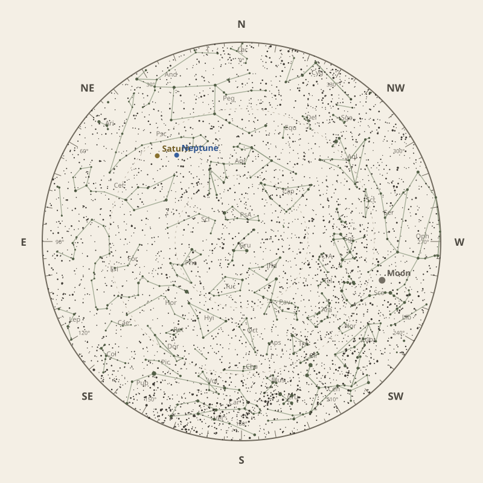

Monthly field almanac
October 2026


Saturn reaches opposition on 5 Oct 2026 and is highest around 1:00 am.
- New Moon
- 11 Oct Darkest skies
- Full Moon
- 26 Oct Brightest skies
- Best dark window
- 7 Oct 10h 09m
Current conditions
Checking the sky near Southern Tasmania, Australia…
Sky chart: 15 Oct 2026, 10 pm
Southern Tasmania, Australia local time.
Show static monthly chart

Night planner
Choose a date to see astronomical darkness, Moon interference, Galactic Centre visibility, and planet altitudes and times.
Best low-Moon dark periods this month
- 7:56 pm–6:04 am10h 09m · 22% Moon
- 7:57 pm–6:03 am10h 06m · 14% Moon
- 7:58 pm–6:01 am10h 03m · 8% Moon


Galactic Centre sessions
- 6:49 pm–11:19 pm4h 30m · core to 67°
- 6:50 pm–11:10 pm4h 20m · core to 66°
- 7:52 pm–12:02 am4h 10m · core to 65°
Events
- HIP 22527 lunar occultation4:13 am; Moon at 19° altitude for the first listed contact.
- Mercury greatest eastern elongationEvening sky; 25.2° from the Sun.
- Comet 34D35° altitude; magnitude 14.5.
October highlights
- Milky Way
Milky Way core window
4h 30m with 67° altitude.
- Occultations
HIP 22400 lunar occultation
3:19 am to 4:38 am; Moon at 18° altitude for the first listed contact.
- Comets
Comet 10P
80° altitude; magnitude 13.9.
- Planetary events
Saturn opposition
Visible for most of the night.
- Meteor showers
Orionids
Peak conditions: 71% Moon illumination; 28° altitude predawn.


Moon phases
For faint deep-sky objects, observe when the Moon is below the horizon or weakly illuminated. For lunar relief, observe near the terminator; full Moon is best suited to ray systems and albedo features.
Download Moon phase CSV →

Planet visibility
Evening
- Venus1 Oct · 7:00 pm22° · Fair
- Mercury16 Oct · 8:00 pm19° · Fair
 Venus
Venus Mercury
MercuryOvernight
- Neptune27 Oct · 11:00 pm48° · Excellent
- Saturn31 Oct · 11:00 pm46° · Excellent
- Uranus28 Oct · 3:00 am26° · Good
 Neptune
Neptune Saturn
Saturn Uranus
UranusPredawn
- Mars31 Oct · 5:30 am21° · Fair
- Jupiter31 Oct · 5:30 am21° · Fair
 Mars
Mars Jupiter
Jupiter

Data and downloads
Positions are unavailable for 2 comet entries.
Occultation times use a smooth lunar limb; confirm grazing events with IOTA Occult 4.